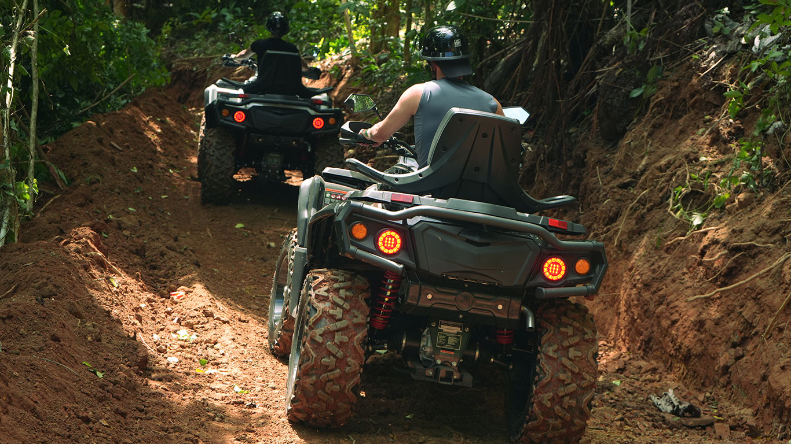
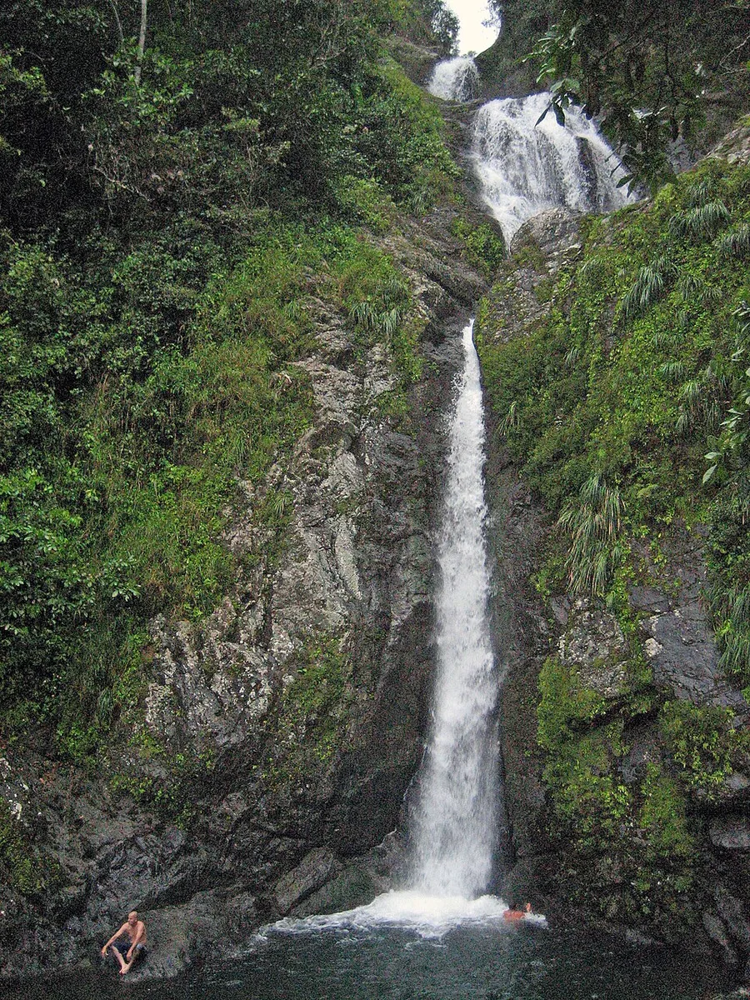
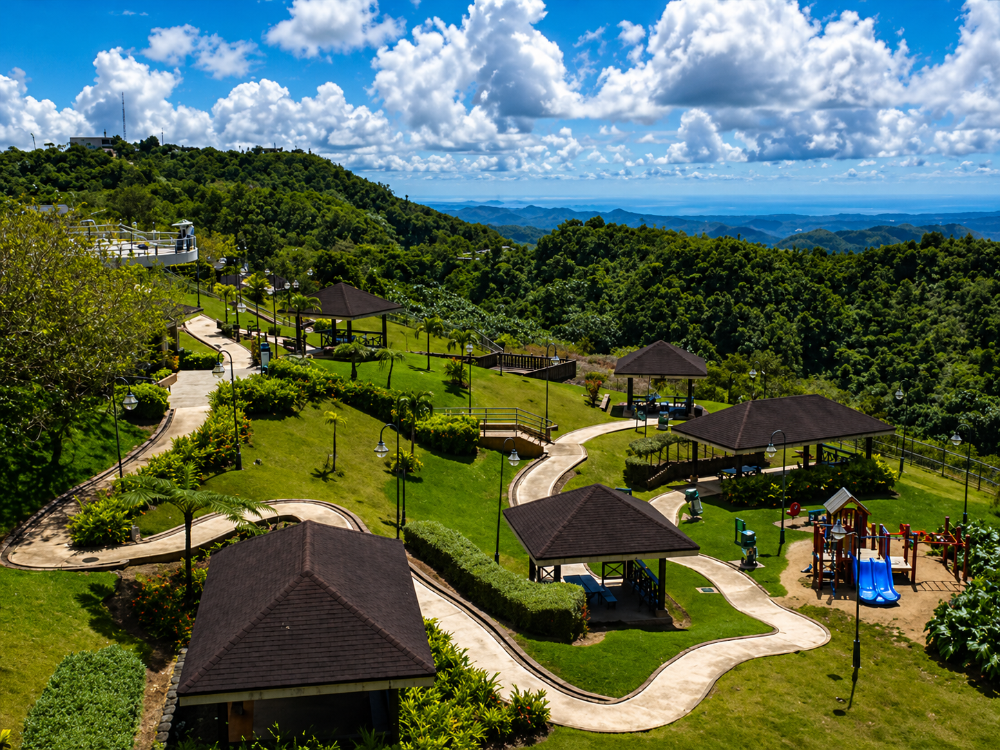
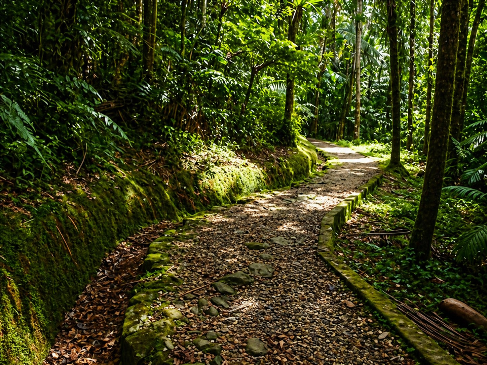

Toro Verde Nature Adventure Park
Toro Verde es uno de los parques de aventura más conocidos de Puerto Rico. Sus tirolesas cruzan las montañas y ofrecen vistas amplias de la Cordillera Central.
Más información


Orocovis es un destino para quienes buscan montañas, aventura y vistas panorámicas.
Estos lugares muestran por qué se le llama el corazón de Puerto Rico.

Toro Verde es uno de los parques de aventura más conocidos de Puerto Rico. Sus tirolesas cruzan las montañas y ofrecen vistas amplias de la Cordillera Central.
Más información
Esta cascada es una parada natural muy popular para fotos y descanso. Está asociada al área del Bosque Estatal Toro Negro y requiere cuidado para proteger el lugar.
Ver galería
Desde este miradero se observan paisajes de montaña y, en días despejados, se pueden apreciar zonas hacia el norte y el sur de la isla.
Más información
El área del Bosque Estatal Toro Negro ofrece ríos, áreas para caminar, espacios de acampar y contacto directo con la naturaleza montañosa.
Ver multimedia